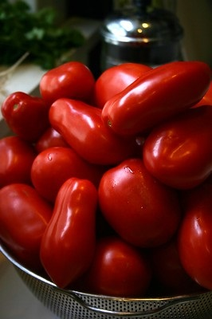
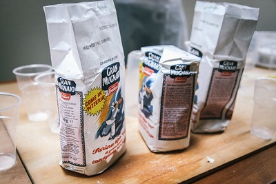
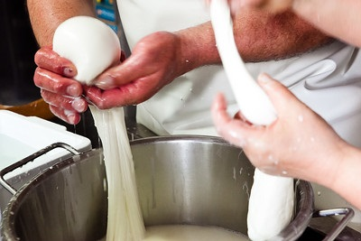
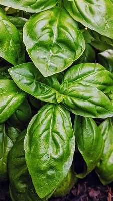

Neopolitian pizza is the first ever style of pizza that was invented
in the late 16th century in Naples, Italy. In 1889, Raffaele Esposito created
the Pizza Margherita for Queen Margherita of Sevoy. He used tomatoes, mozzarella,
and basil to reflect the Italian flag.
There are four ingredients that must be used for a pizza to be correctly
classified as a Neapolitan style pizza. Marzano tomotoes, finely refined flour that is usually
classified as 0 or 00 zero flour, natural mozarella cheese, and fresh basil.

Marzano tomatoes are a vareity of plum tomato that
originated in the Campania region of italy. It is known for its
rich flavor and its often used in canning.

Flour must be finely ground and is usually classified
as 00, which is of the finest flour categories. The
flour must be made in Italy.

fresh mozzarella is milky, tender, and mild,
with a faint layer of cream beneath the skin that gushes a
little when you slice it. It melts evenly, perfectly topping
a freshly baked pizza.

The Neapolitan pizza is topped off with a
sprinkling of fresh basil. The aroma of fresh basil contrasts
the smell of baked tomatoes encased in fresh mozarella cheese.
Fresh basil also adds to the presentation with its beautiful green
color.